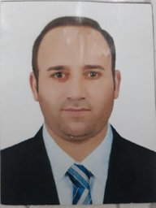
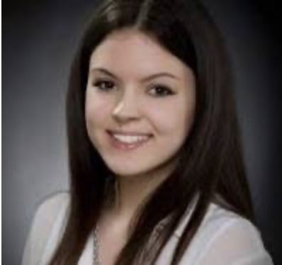
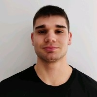

VCH Lab Team
Our group is composed of researchers and students passionate about the intersection of Artificial Intelligence, Computer Vision, and Cultural Heritage.
Team Members

Research Affiliates

Sara Miketek
Collaborating Researcher Topic: Style Recognition of Artworks
Biagio Barchielli
Collaborating Researcher Topic: Style Recognition of ArtworksMai Bakr
Collaborating Researcher Topic: Visual Analysis of Ancient Mesopotamian WaresVisiting Scholars & Students
- Emirhan Ozkan (Erasmus+ Intern, 2025) — Sabanci University, Istanbul (Turkey)
- Selahattin Aksoy (Erasmus+ Intern, 2025) — Mugla University, Mugla (Turkey)
- Alp Mert (Erasmus+ Intern, 2023) — Middle East Technical University, Ankara (Turkey)
Alumni
- Ali Safaei (MSc Student, 2024) — Thesis: "Ancient Coin Classification Using Convolutional Neural Networks and Vision Transformers".
- Andrea Munarin (MSc Student, 2024) — Thesis: "Enhancing Ancient Fresco Restoration: Exploring the potential of Diffusion Models".
- Sara Miketek (MSc Student, 2024) — Thesis: "Exploring Artistic Styles in Pieces: A Computational Approach to Artwork Fragment Classification".
- Farzaneh Yousefi (MSc Student, 2024) — Thesis: "Computational Approaches to Die Analysis in Ancient Numismatics".
- Aref Enayati (MSc Student, 2023) — Thesis: "Black-Mark Removal and Semantic Motif Segmentation for Digital Restoration of Fresco Fragments".
Scientific Collaborators
- Marcello Pelillo — Professor, Ca' Foscari University of Venice (Italy).
- Franco Ripa di Meano — Professor, Academy of Fine Arts of Rome (Italy).
- Zeynep Cizmeli Ogun — Professor, Ankara University (Turkey)
- Luc Steels (2020-2022) — Professor, VUB / ICREA (Spain/Belgium).
- Andrea Critto (2020-2022) — Professor, CMCC & Ca' Foscari University of Venice (Italy).